Examples
The example maps of OGC Cartographic Symbology 2.0 Part 1, as they are in the document: each drawn by
the draft renderer from the CartoSym-CSS below it, on real data of Rondane, Norway (Kartverket N50 Kartdata and the
national elevation model, and Copernicus Sentinel-2). Land cover, relief and rivers drawn as context are not part of the
style; the figure captions in the document say where. From the spec at origin/main
fefe225.

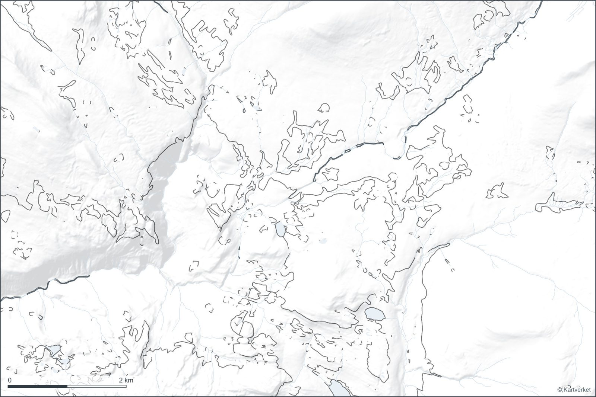
Example 1Land cover with the default symbolizer (Rondane, N50 Kartdata)#
The style, in CartoSym-CSS
'Styling a land cover layer' 'Styling land cover data with Style & Symbology Core' 'This is a simple example of how to style a land cover layer using Style & Symbology Core.'Landcover[dataLayer.type = vector]{ visibility: false; [viz.sd < 200000 and viz.date > DATE('2020-01-01')] { visibility: true; opacity: 0.5; zOrder: 1; }}

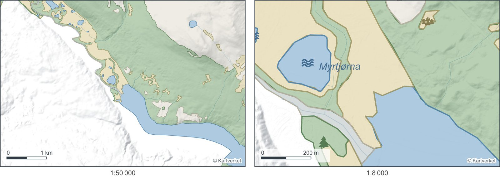
Example 2Land cover in Rondane (N50 Kartdata) around Myrtjørna#
The style, in CartoSym-CSS
'Styling polygon vector features' 'Basic vector features styling (polygons): land cover in Rondane, Norway (N50 Kartdata)'Landcover[dataLayer.type = vector and dataLayer.featuresGeometryDimensions = 2]{ // Do not show Landcover layer by default visibility: false; // No default Dot at each polygon's centroid marker: null; // Show land cover if zoomed in more than 1:200,000 for data valid within visualization's selected time range [viz.sd < 200000 and validDate >= viz.timeInterval.start.date and validDate <= viz.timeInterval.end.date] { visibility: true; opacity: 0.8; zOrder: 1; // Open land and the other classes: a light neutral fill through which the relief below shows fill: {color: #d6cfbd; opacity: 0.5}; stroke: {color: #a8a08c; width: 0.75 px; opacity: 1.0}; // Select different fill and stroke color based on class property [class = 'bog'] { fill.color: #cbb867; stroke.color: #8f8448; } [class = 'forest'] { fill.color: #4f8a45; stroke.color: #3d6b35; } [class = 'lake'] { fill.color: #6fa3cc; stroke.color: #2f6d9e; } // If zoomed in more than 1:10,000 [viz.sd < 10000] { // Change stroke width to 2 pixels stroke.width: 2.0 px; // Add a text marker (positioned at centroid + horizontal offset) showing name property marker: {elements: [ Text( position: 20 0; // Offset 20 pixels to the right text: name; alignment: left top; font: { face: 'Arial'; size: 14; bold: false; italic: true; opacity: 1.0; color: #1f4e79; }; ) ]}; // Add icons at centroid based on land cover class property [class = 'bog'] { marker.elements[1]: Image { image: {uri: 'http://example.com/icons/bog.svg'; path: 'icons/bog.svg'; id: 'bog'; type: 'image/svg+xml'; ext: 'svg'}; hotSpot: 50 pc 50 pc; tint: white; blackTint: #6b5f2a; alphaThreshold: 0.1; }; } [class = 'forest'] { marker.elements[1]: Image { image: {uri: 'http://example.com/icons/forest.svg'; path: 'icons/forest.svg'; id: 'forest'; type: 'image/svg+xml'; ext: 'svg'}; hotSpot: 50 pc 50 pc; tint: white; blackTint: #2f5d2a; alphaThreshold: 0.1; }; } [class = 'lake'] { marker.elements[1]: Image { image: {uri: 'http://example.com/icons/lake.svg'; path: 'icons/lake.svg'; id: 'lake'; type: 'image/svg+xml'; ext: 'svg'}; hotSpot: 50 pc 50 pc; tint: white; blackTint: #1f4e79; alphaThreshold: 0.1; }; } } }}

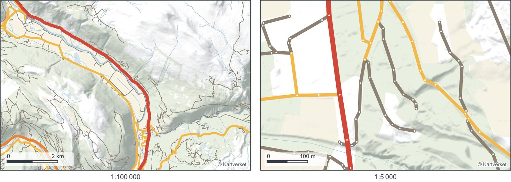
Example 3Roads in Sel by road class, with the E6 through Selsverket (N50 Kartdata)#
The style, in CartoSym-CSS
'Styling line vector features' 'Basic vector features styling (lines): roads in Sel, Norway (N50 Kartdata), colored by road class'Roads[dataLayer.type = vector and dataLayer.featuresGeometryDimensions = 1]{ visibility: false; // No default Dot at each vertex marker: null; [viz.sd < 200000 and class <> 'path' and validDate >= viz.timeInterval.start.date and validDate <= viz.timeInterval.end.date] { visibility: true; zOrder: 2; // Private and tractor roads stroke: {color: #8c8172; width: 1.0 px; opacity: 1.0}; // Select stroke color, width and drawing order based on the class property [class = 'municipal'] { stroke: {color: #f2b84b; width: 2.5 px}; zOrder: 3; } [class = 'county'] { stroke: {color: #f2b84b; width: 3.5 px}; zOrder: 4; } [class = 'national'] { stroke: {color: #e8833a; width: 4.5 px}; zOrder: 5; } [class = 'european'] { stroke: {color: #d0483a; width: 5.5 px}; zOrder: 6; } // If zoomed in more than 1:10,000 [viz.sd < 10000] { // Change stroke width to 8 meters (12 meters for the main roads) stroke.width: 8.0 m; // Add Dot at each segment end-point marker: { elements: [ Dot { size: 4 m; // Alias for base Shape class stroke width color: white; } ] }; [class = 'national' or class = 'european'] { stroke.width: 12.0 m; } } }}

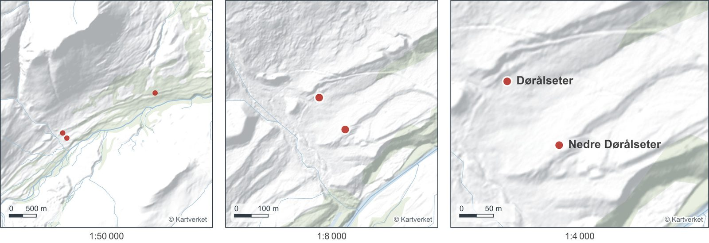
Example 4Tourist cabins in Dørålen, Rondane (N50 Kartdata)#
The style, in CartoSym-CSS
'Styling point vector features' 'Basic vector features styling (points): tourist cabins in Dørålen, Rondane, Norway (N50 Kartdata)'Huts[dataLayer.type = 'vector' and dataLayer.featuresGeometryDimensions = 0]{ visibility: false; [viz.sd < 200000 and validDate >= viz.timeInterval.start.date and validDate <= viz.timeInterval.end.date] { visibility: true; opacity: 0.9; zOrder: 3; // A small Dot (positioned at the point) marker: { elements: [ Dot { size: 7 px; color: #b8322a } ] }; // If zoomed in more than 1:10,000 [viz.sd < 10000] { // Replace it with a double-Dot marker (positioned at centroid) marker: { elements: [ Dot { // larger white dot underneath size: 14 px; // Alias for base Shape class stroke width position: 0 0; color: white; }, Dot { // smaller red dot in center size: 10 px; // Alias for base Shape class stroke width position: 0 0; color: #b8322a; } ]}; [viz.sd < 5000] { // Add a Text graphic to Marker at 1:5000 marker.elements[2]: Text { position: 12 0; // Offset 12 pixels to the right text: name; // Name of the cabin alignment: left middle; font: { face: 'Arial'; size: 12; bold: true; italic: false; opacity: 1.0; color: #2b2b2b; } }; } } }}

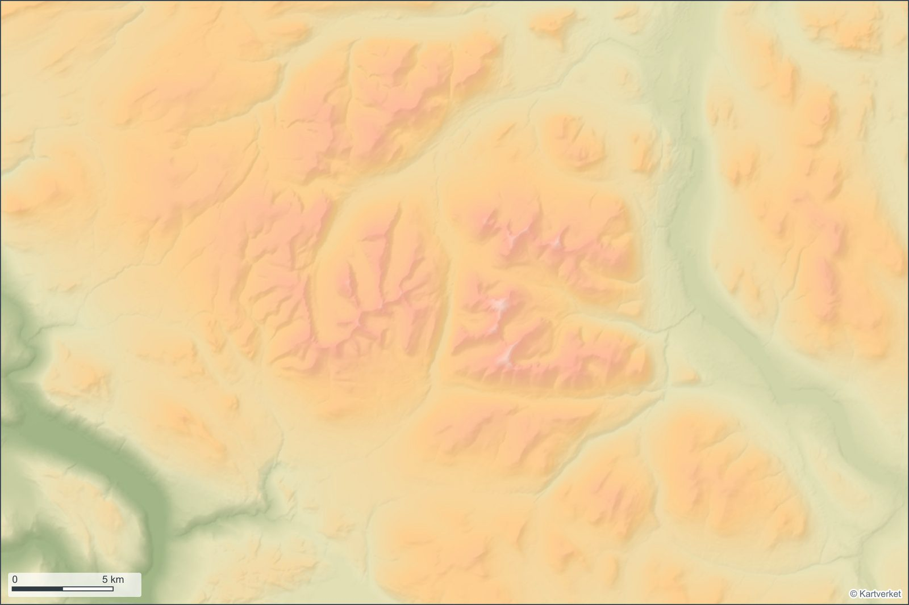
Example 5Elevation of Rondane with a color map#
The style, in CartoSym-CSS
'DEM with color map' 'Applying a color map to a Digital Elevation Model with Style & Symbology Basic Coverage Styling'Elevation[dataLayer.type = coverage]{ visibility: false; [viz.sd < 200000] { visibility: true; opacity: 0.8; zOrder: 1; singleChannel: elevation; // Use elevation coverage field colorMap: [ 0 96 136 73, 900 226 219 167, 1300 252 197 117, 1900 254 168 134, 2500 250 250 250 ]; }}

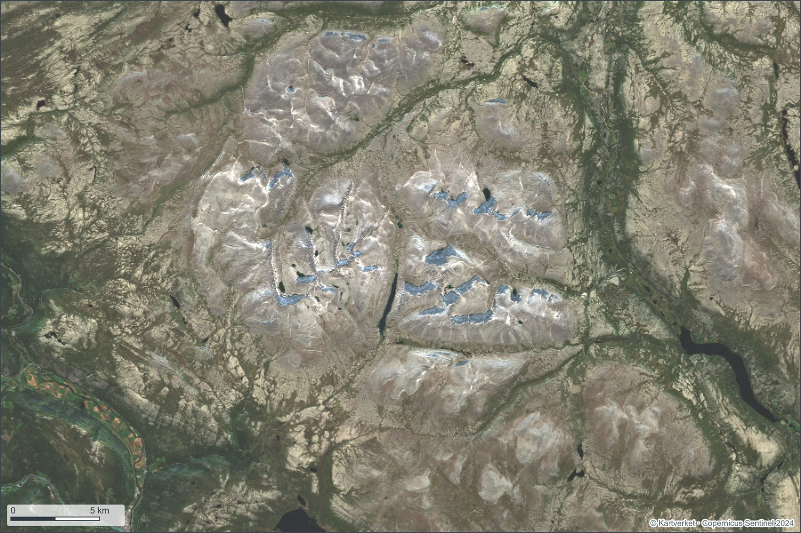
Example 6Sentinel-2 L2A over Rondane (1 September 2024) in natural color#
The style, in CartoSym-CSS
'sentinel-2 natural color' 'Styling a Sentinel-2 L2A coverage with Style & Symbology Basic Coverage Styling'"sentinel2-l2a"[dataLayer.type = coverage]{ visibility: false; [viz.sd < 200000] { visibility: true; opacity: 0.8; zOrder: 1; colorChannels.r: B04 / 2500; colorChannels.g: B03 / 2500; colorChannels.b: B02 / 2500; alphaChannel: 1.0; [SCL=8] { alphaChannel: 0.5; } // Reduce alpha channel value for medium cloud probability [SCL=9] { alphaChannel: 0.0; } // Zero alpha channel value for high cloud probability }}

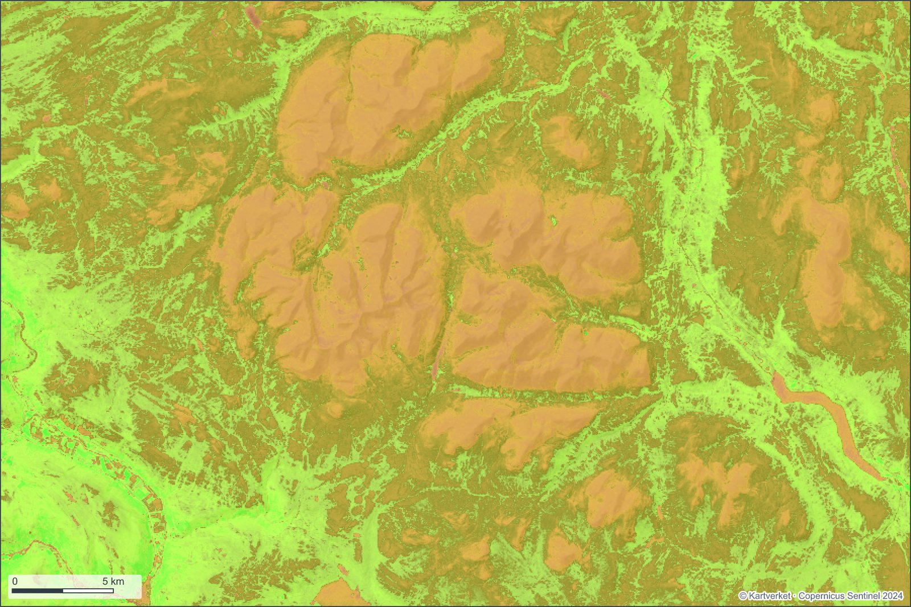
Example 7NDVI of the same Sentinel-2 scene with a color map#
The style, in CartoSym-CSS
'sentinel-2 NDVI' 'Styling a Sentinel-2 L2A coverage for NDVI with Style & Symbology Basic Coverage Styling'"sentinel2-l2a"[dataLayer.type = coverage]{ visibility: false; [viz.sd < 200000] { visibility: true; opacity: 0.8; zOrder: 1; singleChannel: (B08 - B04)/(B08 + B04); alphaChannel: 1.0; colorMap: [-1.0 saddleBrown,0.0 peru,0.2 goldenrod,0.5 olive,0.6 yellowGreen,0.8 greenYellow,1.0 lime]; [SCL=8] { alphaChannel: 0.5; } // Reduce alpha channel value for medium cloud probability [SCL=9] { alphaChannel: 0.0; } // Zero alpha channel value for high cloud probability }}

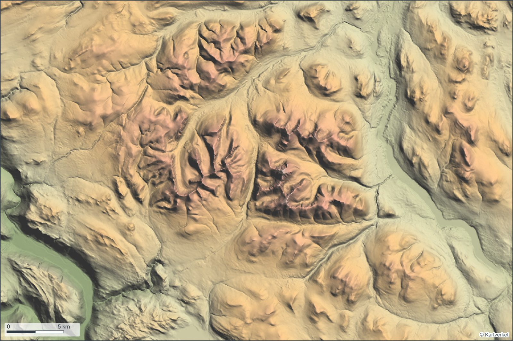
Example 8Elevation of Rondane with hill shading and a color map#
The style, in CartoSym-CSS
'hill-shaded DEM with color map' 'Applying hill-shading and a color map to a Digital Elevation Model with Style & Symbology Basic Coverage Styling'Elevation[dataLayer.type = coverage]{ visibility: false; [viz.sd < 200000] { visibility: true; opacity: 0.8; zOrder: 1; singleChannel: elevation; // Use elevation coverage field // This color map is mapped from elevation values colorMap: [0 96 136 73, 900 226 219 167, 1300 252 197 117, 1900 254 168 134, 2500 250 250 250]; hillShading: {factor: 3; sun: {azimuth: 45.0; elevation: 60.0}}; }}

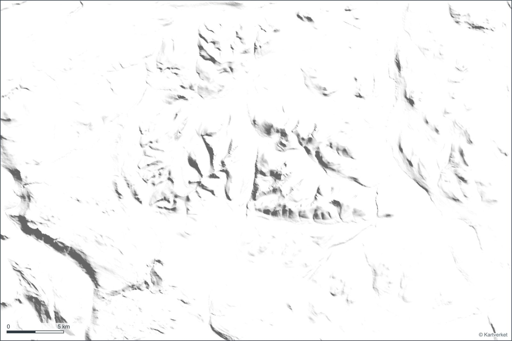
Example 9Hill shading of Rondane with an opacity map#
The style, in CartoSym-CSS
'hill-shaded DEM with opacity and color map for shading intensity' 'Applying hill-shading a color map to a Digital Elevation Model with Style & Symbology Basic Coverage Styling'// This type of intensity-based hill shading can be overlaid on top of imagery or vector mapsElevation[dataLayer.type = coverage]{ visibility: false; [viz.sd < 200000] { visibility: true; opacity: 0.8; zOrder: 1; singleChannel: elevation; // Use elevation coverage field hillShading: { factor: 3; sun: {azimuth: 45.0; elevation: 60.0}; // These colors and opacity are mapped from the 0..1 shading intensity rather than elevation values colorMap : [0 black, 0.15 gray, 0.35 silver, 0.55 white]; opacityMap: [0 0.75, 0.15 0.50, 0.35 0.25, 0.55 0.00]; }; }}

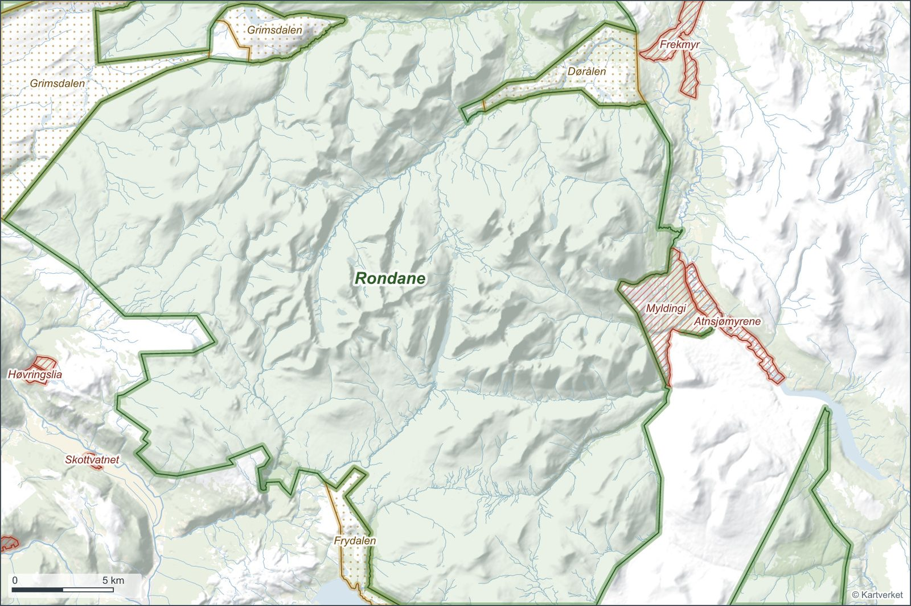
Example 10Protected areas around Rondane by kind of protection (N50 Kartdata)#
The style, in CartoSym-CSS
'Protected areas by class' 'This style is used to draw the protected areas around Rondane, Norway, by the kind of protection.' 'This style uses the protected areas of N50 Kartdata from the Norwegian Mapping Authority (Kartverket), available at https://kartkatalog.geonorge.no/metadata/n50-kartdata/ea192681-d039-42ec-b1bc-f3ce04c189ac' 'Protected area, National park, Norway'// A light tint over the context, a soft band along each boundary with a crisp line in its center,// and a texture for the kinds of protection other than the national parkProtectedAreas[dataLayer.type = vector]{ visibility: true; zOrder: 1; marker: null; [class = 'nationalPark'] { fill: { color: #4f8a3c; opacity: 0.12 }; stroke: { color: #4f8a3c; width: 7 px; opacity: 0.45; center: { color: #2f5d2a; width: 1.2 px } }; label: { elements: [ Text { text: name, alignment: center middle, font: { face: 'Arial', size: 13, bold: true, italic: true, color: #2f5d2a, outline: { size: 2.5, opacity: 0.85, color: white } } } ], placement: { priority: 3; minSpacing: 500 } }; } [class = 'landscapeProtection'] { fill: { color: #a8741a; opacity: 0.55; dotpattern: { distance: { horizontal: 7 px; vertical: 7 px } } }; stroke: { color: #c99a3a; width: 5 px; opacity: 0.4; center: { color: #8a5e14; width: 1 px } }; label: { elements: [ Text { text: name, alignment: center middle, font: { face: 'Arial', size: 8.5, italic: true, color: #6e4a0e, outline: { size: 2, opacity: 0.85, color: white } } } ] }; } [class = 'natureReserve'] { fill: { color: #b8442f; opacity: 0.6; hatch: { width: 1 px; angle: 45; distance: 5 px } }; stroke: { color: #d0705a; width: 5 px; opacity: 0.4; center: { color: #9a3322; width: 1 px } }; label: { elements: [ Text { text: name, alignment: center middle, font: { face: 'Arial', size: 8.5, italic: true, color: #7e2a1c, outline: { size: 2, opacity: 0.85, color: white } } } ] }; }}

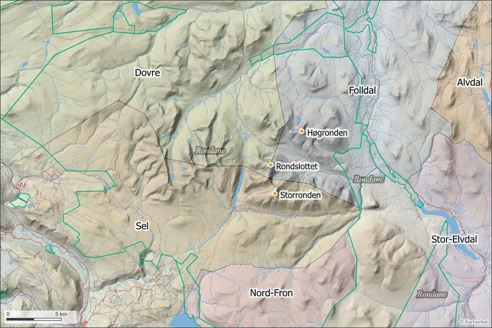
Example 11Overview map of Rondane from several N50 layers and the elevation model#
The style, in CartoSym-CSS
'Rondane overview map' 'A map of the area around Rondane, Norway, from several N50 Kartdata layers and the elevation model'{ visibility: false; }Municipalities{ visibility: true; zOrder: 1; opacity: 0.3686275; marker: null; label: { elements: [ Text { text: name, alignment: center middle, font: { face: 'Tahoma', size: 14, outline: { size: 3, opacity: 0.75, color: white } } } ] }; [name = 'Alvdal'] { fill.color: #e8c9a0; } [name = 'Dovre'] { fill.color: #c9dbb2; } [name = 'Folldal'] { fill.color: #b9cfe0; } [name = 'Nord-Fron'] { fill.color: #e6c3cf; } [name = 'Sel'] { fill.color: #d9d0a6; } [name = 'Stor-Elvdal'] { fill.color: #cdc4e2; }}Elevation{ visibility: true; zOrder: 0; singleChannel: elevation; colorMap: [ 300 #e4f4f7, 900 #f2f0e6, 1300 #e8dcc4, 1700 #d6c8b8, 2200 #ffffff ]; hillShading: { factor: 1.5; sun: { azimuth: 315; elevation: 60 } };}Landcover{ marker: null; stroke: { width: 0 }; [class = 'lake' or class = 'river'] { visibility: true; fill: { color: #7fb2d8 }; zOrder: 67; } [class = 'bog'] { visibility: true; opacity: 0.4235294; fill: { color: burlyWood }; zOrder: 65; }}Rivers{ visibility: true; marker: null; stroke: { color: #5f9ccc, width: 0.5 }; zOrder: 36;}Roads{ marker: null; zOrder: 86; [class = 'european' or class = 'national' or class = 'county'] { visibility: true; stroke: { width: 0.66, color : #c42e31 }; } [class = 'municipal' or class = 'private'] { visibility: true; stroke: { width: 0.5, color : gray }; } [class = 'path'][marked = true] { visibility: true; stroke: { width: 0.5, color : #c42e31, dashPattern: [ 3, 2 ] }; }}ProtectedAreas{ visibility: true; fill: { opacity: 0 }; stroke: { color: #00af7a, width: 1.5 }; marker: null; zOrder: 87; [class = 'nationalPark'] { label: { elements: [ Text { text: name, font: { face: 'Times New Roman', size: 12, italic: true, color: papayaWhip, outline: { size: 3, color: black, opacity: 0.35 } }, alignment: { center, middle } } ] }; }}Places{ visibility: true; zOrder: 24; marker: null; [type = 'mountain' and elevation >= 2100] { label: { elements: [ Dot { color: white, size: 10 }, Dot { color: darkOrange, size: 6 }, Text { text: name, position: 10 4, font: { face: 'Tahoma', size: 12, outline: { color: white, size: 3.5, opacity: 0.75 } }, alignment: { left, middle } } ] }; }}
Requirement figures#
Under each requirement a map can show, the document has a row of small panels that change one value of the style. A few of them; each links to its requirement.
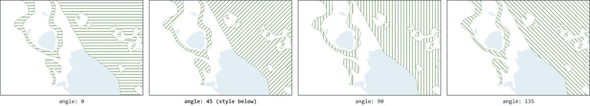
The angle of the hatch lines on the forest around Myrtjørna/req/hatches/angle · panels vary the angle of the hatch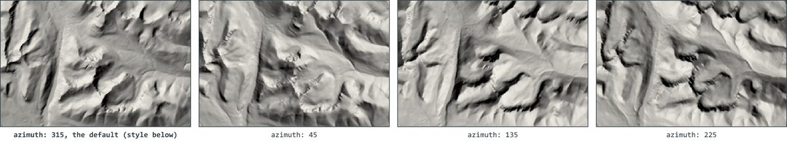
Hill shading with the sun from different directions/req/hill-shading/sun · panels vary the azimuth of the sun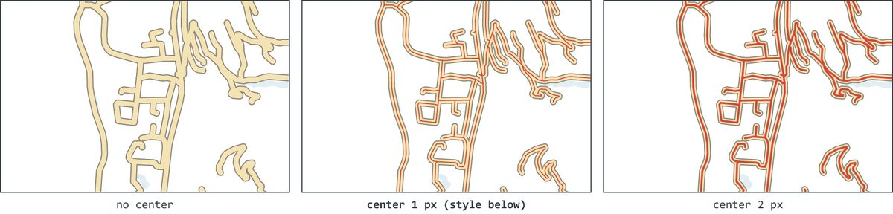
Center line of the roads at Selsverket, Sel/req/casing/center · panels vary the center of the stroke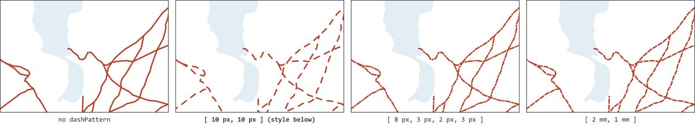
Dash patterns on the paths at Rondvassbu/req/dashes/dash-pattern · panels vary the dashPattern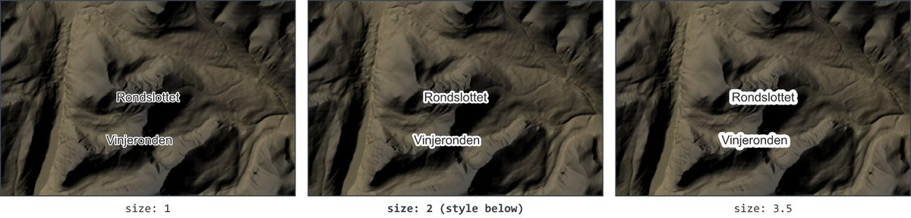
The size of the outline around the peak names/req/font-outlines/size · panels vary the size of the outline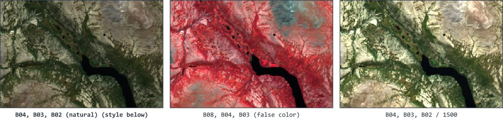
Color channels from the bands of a Sentinel-2 scene (1 September 2024) around Myrtjørna/req/coverage/color-channels · panels vary the colorChannels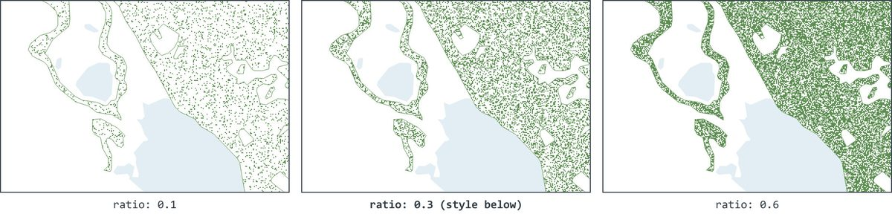
Stipple fills on the forest around Myrtjørna/req/stipples/ratio · panels vary the ratio of the stipple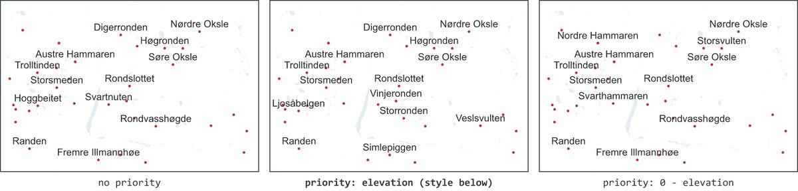
Peak labels placed by priority, overlapping labels left out/req/labels/placement, /rec/labels/overlap · panels vary the priority of the label placementGallery maps#
Fuller maps that combine a requirement with land cover, relief and rivers. They were the requirement figures of #192 until the panels above replaced them, and are kept here, not in the document.
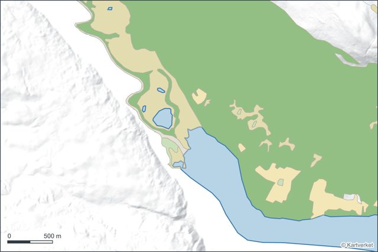
Rules, nested rules and visibility on the land cover around Myrtjørna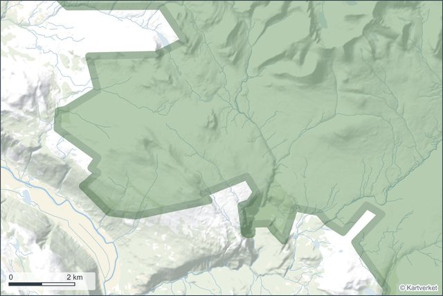
Symbolizer opacity on Rondane national park, fill and wide stroke together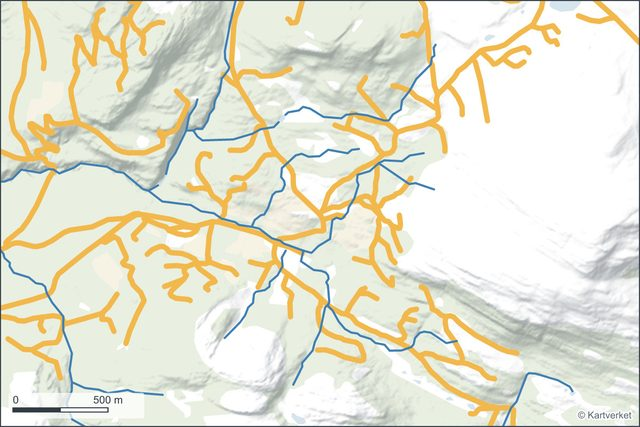
zOrder: rivers above roads at Mysusæter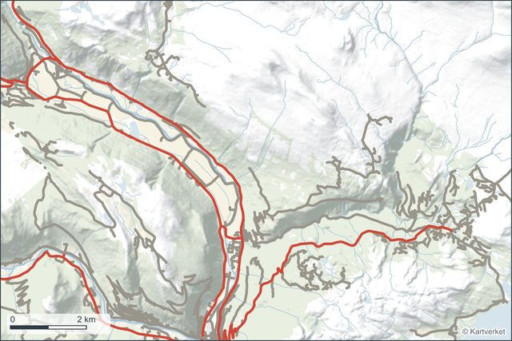
Changing one member of the stroke in a nested rule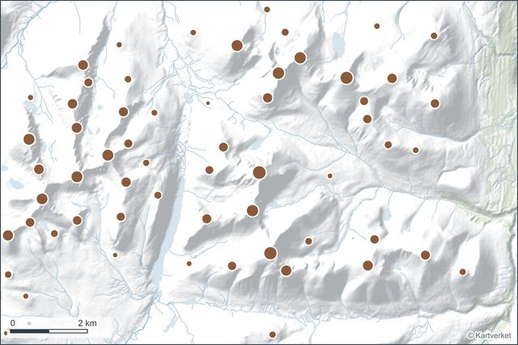
Dot size computed from the elevation of each spot height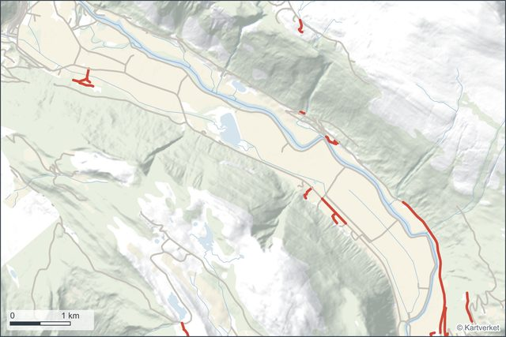
Roads updated in the visualization's time interval (1 January 2020 to 14 November 2026)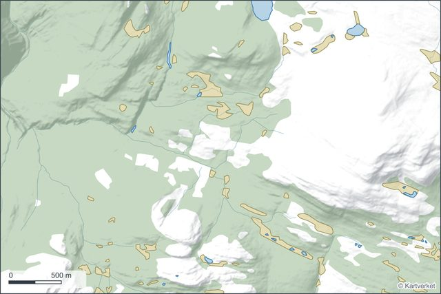
Fill and stroke of forest, bogs and lakes at Mysusæter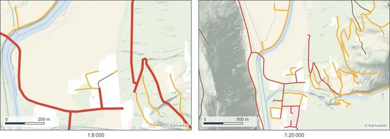
Stroke widths in metres, pixels and millimetres at two scales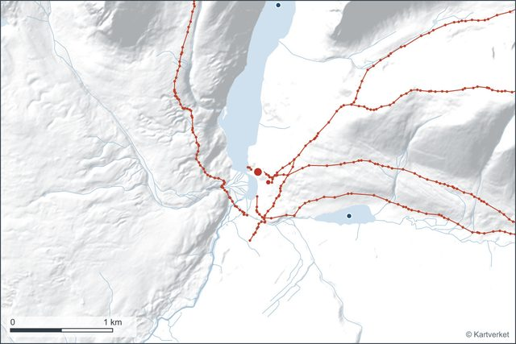
Dot markers on cabins (points), marked paths (line vertices) and lakes (centroids)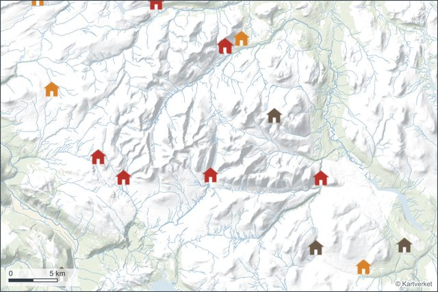
An Image marker on the tourist cabins, colored by service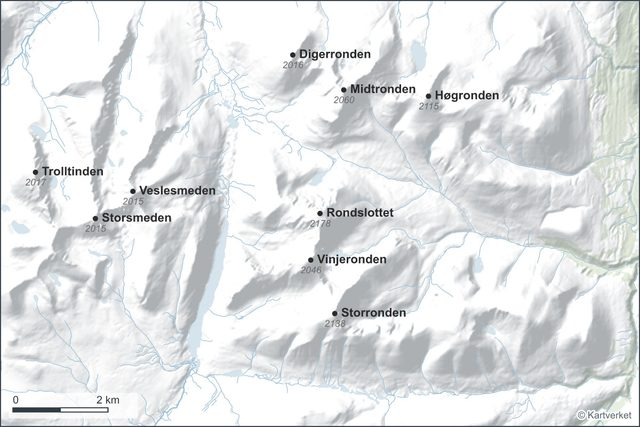
Text markers on the peaks above 1900 m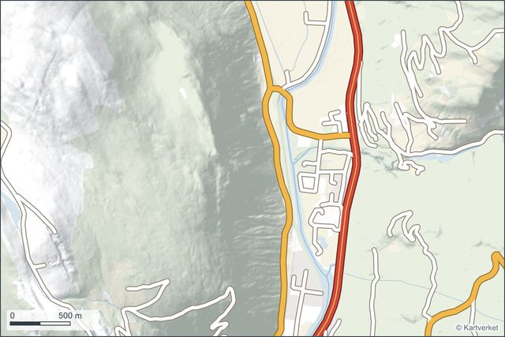
Casing and center line of the roads at Selsverket, Sel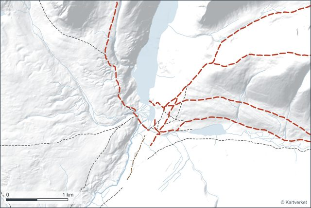
Dashed paths around Rondvassbu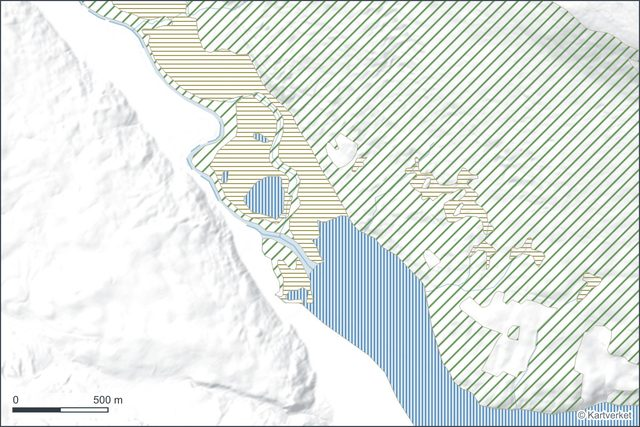
Hatch fills on the land cover around Myrtjørna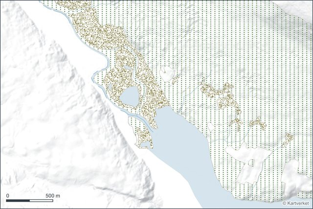
Stipple and dot pattern fills on the land cover around Myrtjørna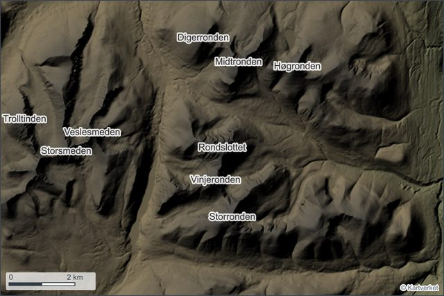
Font outlines on peak names over the relief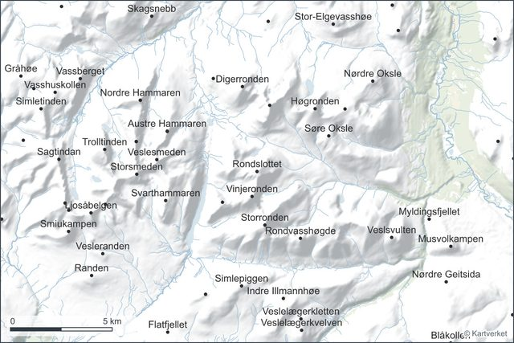
Peak labels placed by priority (elevation), overlapping labels left out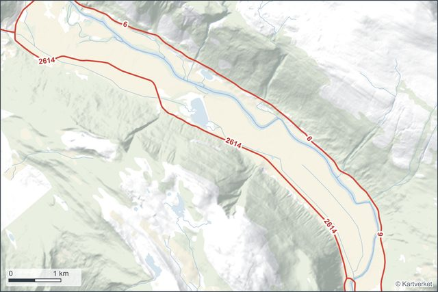
Road numbers repeated along the roads near Otta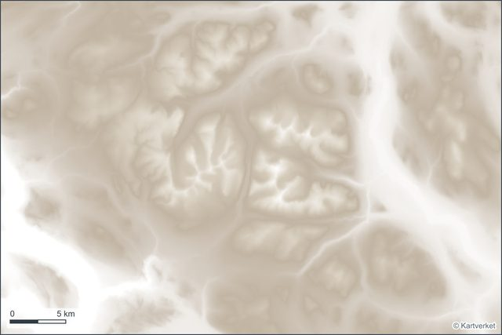
An opacity map on the elevation of Rondane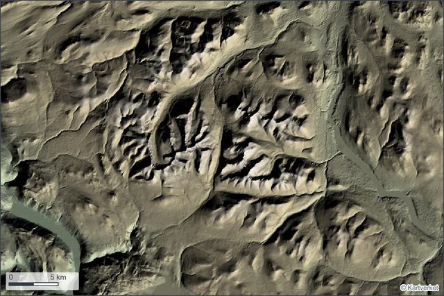
Hill shading with the sun in the south-east, without a hill-shading color map